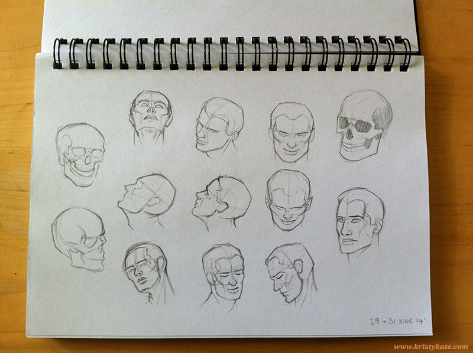

Week 2 & 3 Studies
March 31st - April 13th
What a busy fortnight it has been!
Between travels in Adelaide and attending the ACMI DreamWorks Exhibition live talks and industry masterclass, I haven't had as much time to study as I would have liked. Not necessarily a bad thing though as I got to see and experience so many wonderful artworks and insights – all that I hope to share with you in the near future.
Aside from a few Loomis and sculpture studies (images 1 & 2 below), I took the spare time I had to focus on drawing people in public. After the initial awkwardness of setting up and gazing at randoms, I was surprised I had shied away from this activity for so long - it is such a blast and a great way to improve visual memory!
I'll definitely be looking at incorporating it further into my study plans.

+ + +
Have any thoughts on my studies? Help me become a better artist by leaving a comment (constructive criticism welcome) or getting in contact via Twitter or Facebook. I'm more than happy to return the favour!
{kind=link}
{kind=link}
{kind=link}
{kind=link}